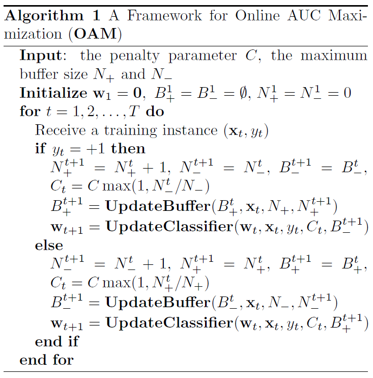
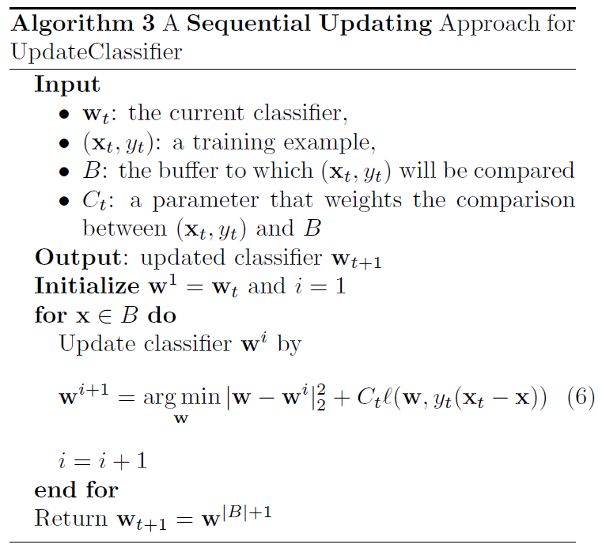
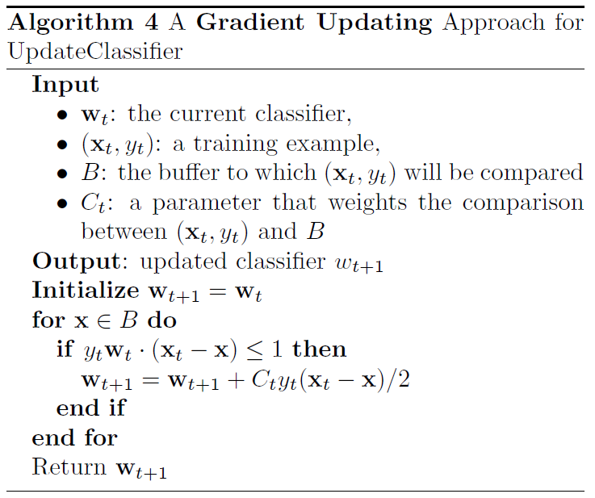
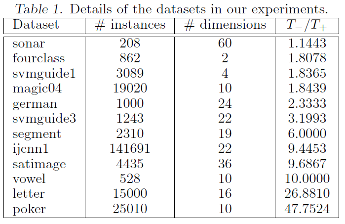
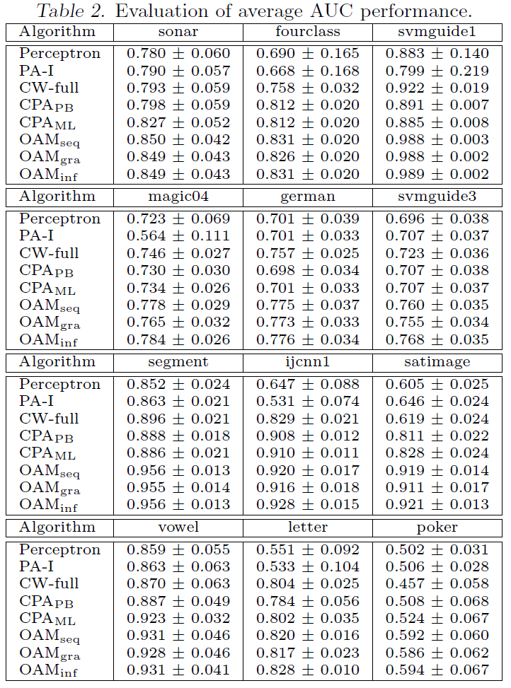
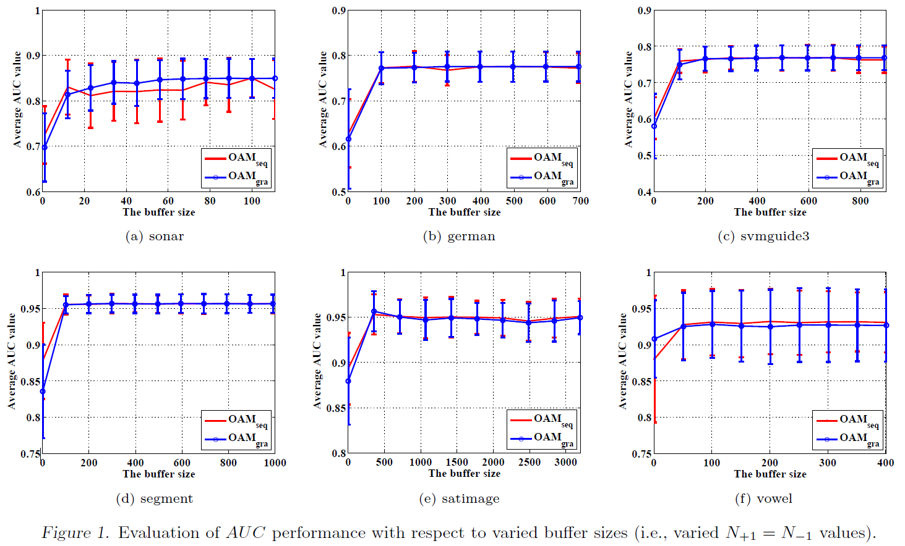

Zhao et al., 2011, Online AUC Maximization, ICML. pdf
Motivation
- Most studies of online learning measure the performance of a learner by classification accuracy, which is inappropriate for applications where the data are unevenly distributed among different classes
- AUC maximization needs to optimize the pairwise loss between two instances from different classes, making it unattractive for large-scale applications
- The authors address this challenge by exploiting the reservoir sampling
Preliminaries
- \((\mathbf{x}_t, y_t)\): the training examples received at the \(t\)-th trial where \(\mathbf{x}_t \in \mathbb{R}^d\) and \(y_t \in \{ -1, 1\}\)
- Training dataset: \(\mathcal{D} = \{ (\mathbf{x}_i, y_i) \in \mathbb{R} \times \{ -1, 1\} | i \in [T] \}\)
- The set of positive instances: \(\mathcal{D}_+ = \{ (\mathbf{x}_i^+, 1) | i \in [T_+] \}\)
- The set of negative instances: \(\mathcal{D}_- = \{ (\mathbf{x}_j^-, -1) | j \in [T_-] \}\)
- \(T_+\), \(T_-\): the number of positive and negative instances
- Linear classifier: \(\mathbf{w} \cdot \mathbf{x}\)
\[\begin{equation} \begin{split} \text{AUC} (\mathbf{w}) & = \frac{\sum_{i=1}^{T^+} \sum_{j=1}^{T_-} \mathbb{I} (\mathbf{w} \cdot \mathbf{x}_i^+ > \mathbf{w} \cdot \mathbf{x}_j^-)}{T_+ T_-} \\[10pt] & = 1 - \frac{\sum_{i=1}^{T^+} \sum_{j=1}^{T_-} \mathbb{I} (\mathbf{w} \cdot \mathbf{x}_i^+ \leq \mathbf{w} \cdot \mathbf{x}_j^-)}{T_+ T_-} \end{split} \end{equation}\]
- Using hinge loss \(l(\mathbf{w}, \mathbf{x} - \mathbf{x}')\), optimal classifier by minimizing the following objective
\[\begin{equation} \frac{1}{2} \lVert \mathbf{w} \rVert _2^2 + C \sum_{i=1}^{T_+} \sum_{j=1}^{T_-} \max \{ 0, 1 - \mathbf{w} \cdot (\mathbf{x}_i^+ - \mathbf{x}_j^-) \} \end{equation}\]
Settings for online learning
- Re-writing the pairwise summation into a sum of losses for individual instances
\[\begin{equation} \begin{split} & L_+^t (\mathbf{w}) = \sum_{k=1}^{t-1} \mathbb{I}(y_{k} = -1) l(\mathbf{w}, \mathbf{x}_t - \mathbf{x}_{k}) \\[10pt] & L_-^t (\mathbf{w}) = \sum_{k=1}^{t-1} \mathbb{I}(y_{k} = 1) l(\mathbf{w}, \mathbf{x}_t - \mathbf{x}_{k}) \\[10pt] & L_t (\mathbf{w}) = \mathbb{I}(y_t = 1) L_+^t (\mathbf{w}) + \mathbb{I}(y_t = -1) L_-^t (\mathbf{w}) \\[10pt] & \frac{1}{2} \lVert \mathbf{w} \rVert _2^2 + C \sum_{t=1}^T L_t (\mathbf{w}) \end{split} \end{equation}\]
- Directly applying the gradient descent based online learning algorithm (Zinkevich and Martin, 2003) needs to store all the received training examples, making it impractical for large-scale online learning tasks
- Caching a small number of received training examples by introducing two buffers
- Two buffers \(B_+\) and \(B_-\) of size \(N_+\) and \(N_-\)
- For example \((\mathbf{x}_t, y_t)\) received at trail \(t\), first update the two buffers, and then update the linear classifier using two buffers
- \(\mathbb{E}[ \cdot ]\): expectation over the randomly sample instances in buffers

Update Buffer
- Maintaining an accurate sketch of history under the constraint of fixed buffer size
- Reservoir sampling (Vitter and Scott, 1985)
- Given \((\mathbf{x}_t, y_t)\)
- Add it to the buffer \(B_{y_t}^t\) if \(|B_{y_t}^t| < N_{y_t}\)
- Otherwise, with probability \(N_{y_t} / N_{y_t}^{t+1}\), update the buffer \(B_{y_t}^t\) by randomly replacing one instance in \(B_{y_t}^t\) with \(\mathbf{x}_t\)
- The instances in the buffers simulate an uniform sampling from the original dataset
- Lemma 1. For any function \(f: \mathbb{R}^d \to \mathbb{R}\) and at any iteration \(t\), we have
\[\begin{equation} \begin{split} & \frac{1}{|B_+^t|} \mathbb{E} \left[ \sum_{\mathbf{x} \in B_+^t} f(\mathbf{x}) \right] = \frac{1}{N_+^t} \sum_{i=1}^{t} \mathbb{I} (y_t = 1) f(\mathbf{x}_i) \\[10pt] & \frac{1}{|B_-^t|} \mathbb{E} \left[ \sum_{\mathbf{x} \in B_-^t} f(\mathbf{x}) \right] = \frac{1}{N_-^t} \sum_{i=1}^{t} \mathbb{I} (y_t = -1) f(\mathbf{x}_i) \end{split} \end{equation}\]
Update Classifier
Sequential Updating
- Treating \(\{ (\mathbf{x}_t, \mathbf{x}), \mathbf{x} \in B \}\) as a sequence of pairwise instances
- Applying an online learning algorithm to update \(\mathbf{w}\) w.r.t. the sequence of pairwise instances
- Theorem 1. After running the Algorithm 1 with the sequential updating in Algorithm 3 and reservoir sampling, for any \(\mathbf{w}\), we have the following where \(T_+\) and \(T_-\) are the total number of positive and negative instances received over \(T\) trials.
\[\begin{equation} \mathbb{E} \left[ \sum_{t=1}^T L_t (\mathbf{w}) \right] \leq \sum_{t=1}^T L_t (\mathbf{w}) + \frac{\lVert \mathbf{w} \rVert _2^2}{C} + \frac{C}{3} (N_+ T_+^3 + N_- T_-^3) \end{equation}\]
- For the optimization problem (6), its closed-form solution is given by \(\mathbf{w}^{i+1} = \mathbf{w}^i + \tau y_t (\mathbf{x}_t - \mathbf{x})\) where \(\tau\) can be computed by
\[\begin{equation} \tau = \min{ \left\{ \frac{C_t}{2}, \frac{l(\mathbf{w}^i, y_t (\mathbf{x}_t - \mathbf{x}))}{\lVert \mathbf{x}_t - \mathbf{x} \rVert _2^2} \right\} } \end{equation}\]

Gradient Updating

Error in Algorith 3, 4: not \(\text{for } \mathbf{x} \in B\), but \(\text{for } \mathbf{x} \in B_{-y_t}\)
Experiments
- 12 datasets from LIBSVM website and UCI ML repository
- 5-fold cross validation with 4 independent repetitions
- \(N_- = N_+ = 100\) and \(C \in 2^{[-10:10]}\)
- Compared methods
- \(\text{Perceptron}\): Rosenblatt’s perceptron
- \(\text{PA}\): Passive-Aggressive algorithm (Crammer et al., 2006)
- \(\text{CW-full}\): confidence-based weighted online learning algorithm (Crammer et al., 2008)
- \(\text{CPA}_\text{PB}\): Prediction-Based Cost-sensitive Passive-Aggressive algorithm (Crammer et al., 2006)
- \(\text{CPA}_\text{ML}\): Max-Loss Cost-sensitive Passive-Aggressive algorithm (Crammer et al., 2006)
- \(\text{OAM}_\text{seq}\): OAM with sequential updating
- \(\text{OAM}_\text{gra}\): OAM with gradient updating
- \(\text{OAM}_\text{inf}\): OAM with infinite buffer size



Further Study
- Cortes and Mohri, 2004, AUC optimization vs. error rate minimization, Advances in Neural Information Processing Systems. pdf
- Joachims, 2005. A support vector method for multivariate performance measures, International Conference on Machine Learning. pdf
References
- Crammer et al., 2006, Online passive-aggressive algorithms, Journal of Machine Learning Research. pdf
- Crammer et al., 2008, Exact convex confidence-weighted learning, Advances in Neural Information Processing Systems. pdf
- Vitter and Scott, 1985, Random sampling with a reservoir, ACM Transactions on Mathematical Software. pdf
- Zinkevich and Martin, 2003, Online convex programming and generalized infinitesimal gradient ascent, International Conference on Machine Learning. pdf
Note
- Kernel formulation for nonlinear classification
- Extension to other loss functions using \(L_t(\mathbf{w})\) formulation